A real run, captured frame by frame: create a fresh kluris brain, hand the first project to your AI agent, curate the neurons it proposes one by one — approve, edit, or reject — open the MRI visualization, ask the brain to review itself, and finally use it every day to ship features and answer questions.
How a brain actually grows
Nothing is auto-saved. The agent surveys the project, drafts neurons, and shows them to you one by one. You read, edit, accept, or reject — every entry is yours before it lands. Over time the brain reorganizes itself with your approval: new lobes appear, old neurons get split or merged, synapses connect what belongs together. The result is a knowledge base shaped by your judgment, written by both of you.
Phase 1 · One-time setup
One kluris create command, a few questions, optional specmint companions —
and you have an empty git-tracked brain ready to be taught. This step happens once per domain.
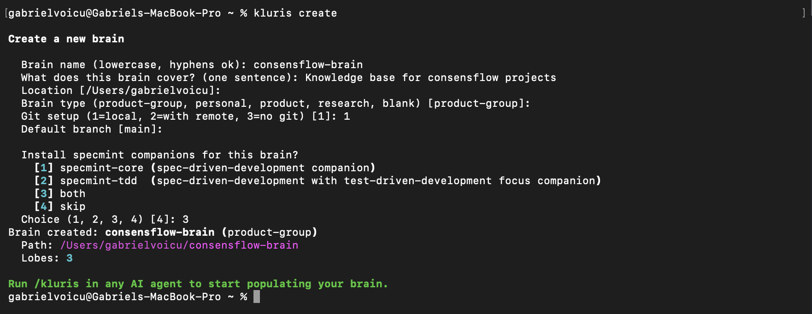
Phase 2 · Repeats per project
Open the project repo, ask the kluris-aware agent to study it, and the back-and-forth begins. The agent surveys the code, plans neurons across lobes, then shows them one at a time for you to review — the file format, the body, every decision. Nothing is committed without your approve.
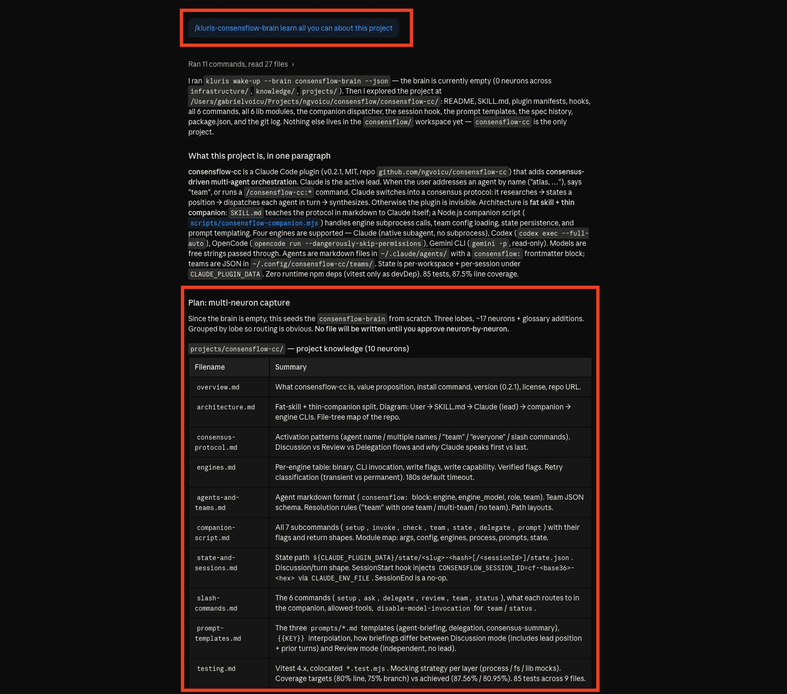
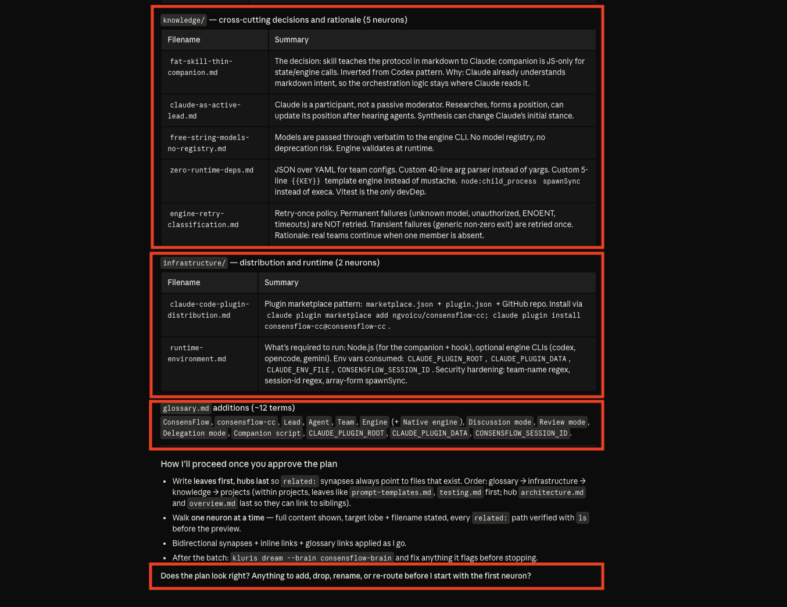
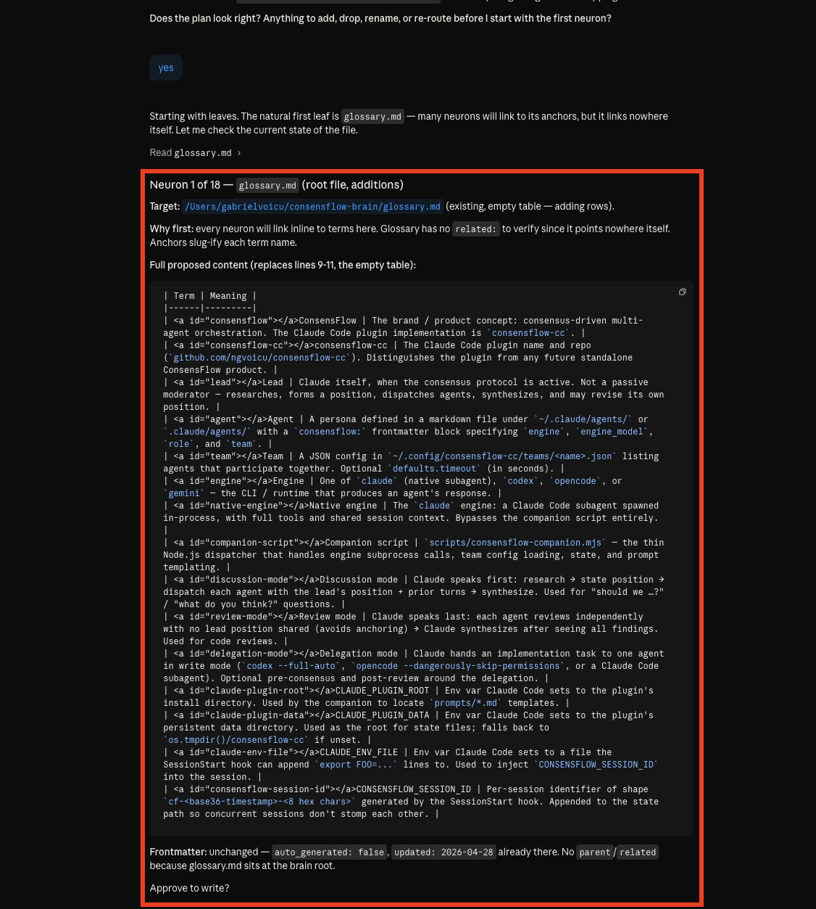
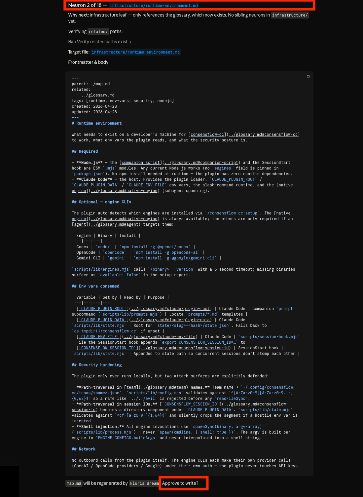
Phase 3 · Repeats per project
Run kluris mri and the brain opens in your browser as a single-page graph.
Every lobe, every neuron, every synapse — pannable, searchable, shareable. Click a node to read it, expand the
synapses to see what touches it, follow the threads.
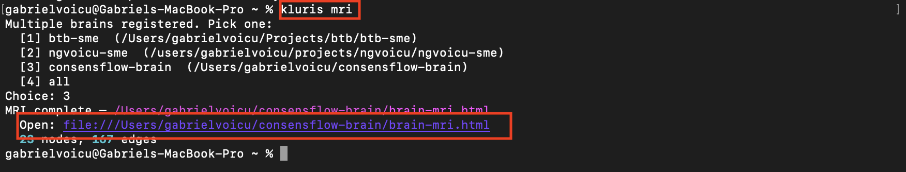
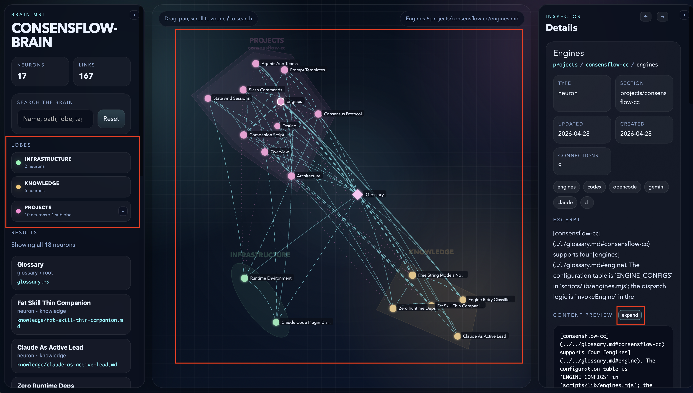
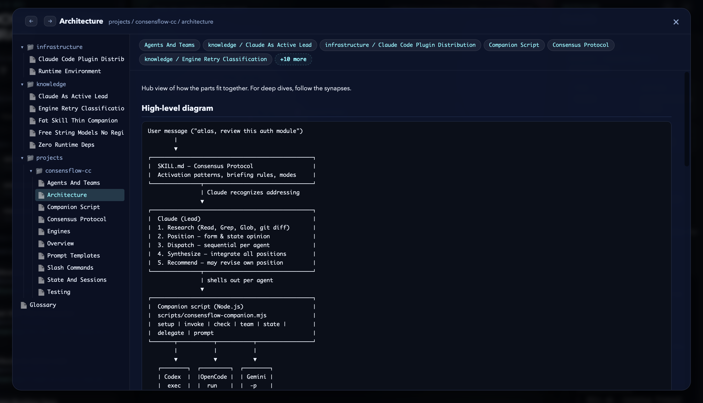
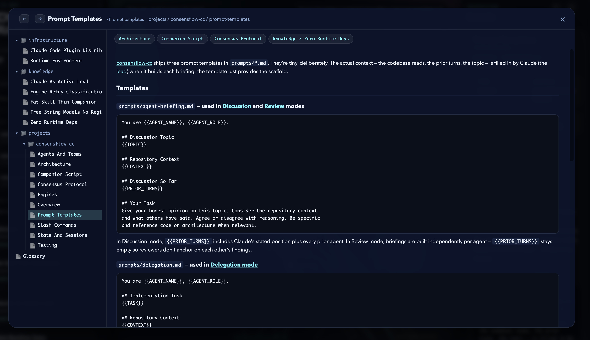
Repeat to grow the brain
Phase 1 happens once. Phase 2 (add a project) and Phase 3 (explore with the MRI) repeat for every other project in the same domain — a sibling repo, a frontend that talks to the same backend, a deploy script, a shared library. Each one teaches the brain a little more, the lobes fill out, the synapses multiply, and the MRI keeps showing you what your team actually knows about that domain.
create → add project → MRI · add next project → MRI · add next project → MRI · …
Phase 4 · Periodic health check
Once enough projects live in the brain, ask it to audit itself. The agent reads every neuron, looks for gaps, contradictions, missing synapses, neurons that should be split or merged — and proposes a restructuring plan. Same approval flow as before: you accept the changes you like, reject the rest. The brain stays clean as it grows.
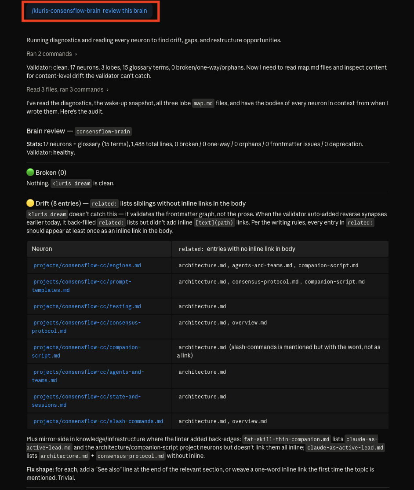
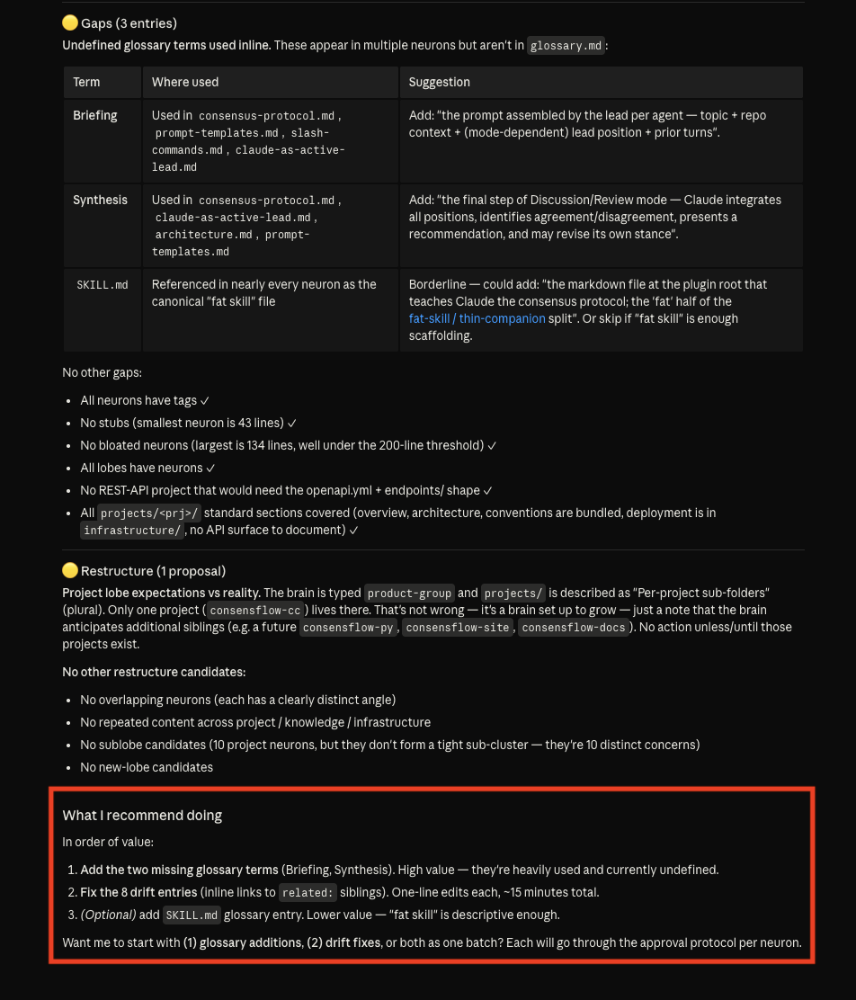
Phase 5 · The daily payoff
Once a domain lives in the brain, every agent on every laptop reads from it before answering. Two everyday shapes: build the next feature and just ask — both grounded in what your team already knows.
Use case 1 · Build the next feature
Tell your AI agent what to build. It reads the brain first, so it already knows your stack, your conventions, your deploy story, your auth model — then proposes code that fits, not generic boilerplate. Optionally, if you enabled specmint or specmint-tdd as a companion when you created the brain, the agent can forge a full spec from the brain first — interview, plan, implementation — every step grounded in your team's actual knowledge.
> /kluris let's add real-time presence to consensflow-cc — who's editing what > /kluris let's create a spec for it first
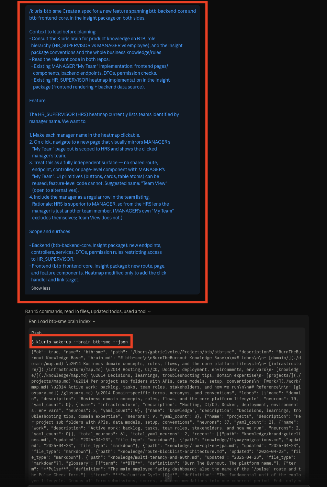
Use case 2 · Just ask
Anybody on the team types /kluris in their agent and gets the team's
actual answer — verified, git-tracked, dated, with the source neuron linked. The same questions that used to
cost a Slack ping and an interrupted senior dev now resolve in seconds, locally, in the IDE.
> /kluris where is btb-backend-core deployed and how? > /kluris how do I deploy this to production? > /kluris how do I change an env variable in prod?
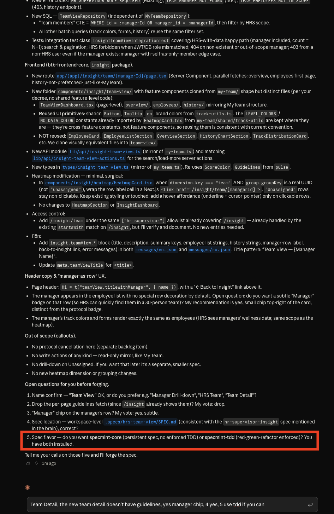
The loop closes · the brain compounds
When the implementation is done — feature merged, bug fixed, deploy survived — turn back to the agent and ask it to capture what you just figured out. New decisions, fresh gotchas, an updated env-var, a workaround that took half a day to find: all of it lands in the brain as new neurons (with your approval, like always). Tomorrow's agent reads them. Next week's teammate reads them. Next quarter's hire reads them.
> /kluris remember what we worked on today and store it to the brain
That's how the brain grows: every project teaches it once, every shipped feature teaches it a little more, and every teammate is both reader and author. Knowledge that used to live in heads, in old Slack threads, in nobody's head — now lives in git, written by the people doing the work.
That's the whole loop
Create once · teach project by project · explore with the MRI · review periodically · use it daily for features and answers. Every step git-tracked, every neuron human-approved, every agent on every laptop reading the same answers tomorrow morning.
Open source · MIT · Free forever · Yours, always.